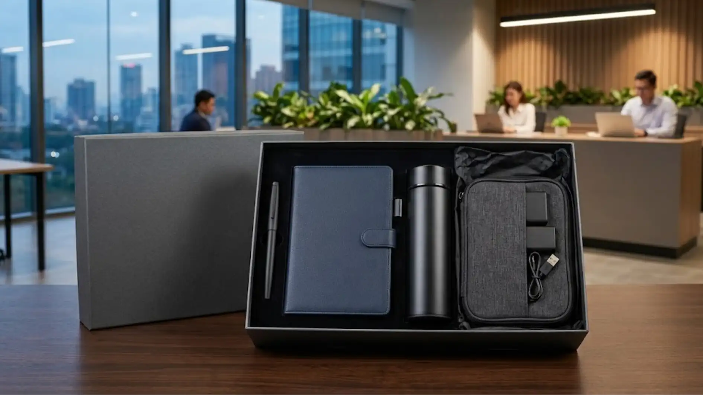

Souvenir Kantor Premium dengan Kualitas Terbaik untuk Berbagai Kebutuhan Perusahaan
 Indriana Safitri (iin)
30 Juli 2026
8 Menit Baca
Indriana Safitri (iin)
30 Juli 2026
8 Menit Baca

Souvenir kantor premium adalah barang bernilai fungsional dan estetika tinggi yang dipilih perusahaan untuk merepresentasikan citra profesional, biasanya berupa alat tulis, tumbler, tas, atau hampers dengan kemasan dan finishing yang lebih baik dibanding souvenir standar. Panduan ini membahas secara menyeluruh apa itu souvenir kantor premium, mengapa perusahaan semakin banyak beralih ke kategori ini, jenis-jenis yang paling umum dipakai, cara memilih vendor, kesalahan yang sering terjadi, hingga tips agar souvenir benar-benar memberikan dampak pada citra perusahaan.
Souvenir kantor premium menekankan pada kualitas bahan, finishing, dan kemasan, bukan sekadar harga murah. Jenisnya beragam, mulai dari alat tulis, drinkware, tas kerja, hingga paket hampers fungsional. Pemilihan souvenir sebaiknya disesuaikan dengan acara, target penerima, dan identitas brand perusahaan. Souvenir premium umumnya digunakan untuk gathering, seminar, penyambutan karyawan baru, hingga hadiah relasi bisnis. Anggaran dapat diatur secara bertingkat tanpa mengorbankan kesan profesional.
Menurut survei Promotional Products Association International (PPAI) tahun 2023, sekitar 83 persen konsumen menyimpan produk promosi karena dianggap berguna dalam kehidupan sehari-hari. Data ini menunjukkan bahwa souvenir kantor yang fungsional cenderung memberikan dampak jangka panjang bagi citra perusahaan dibanding barang yang hanya dipakai sekali. Riset lain dari Advertising Specialty Institute (ASI) tahun 2022 juga mencatat bahwa penerima souvenir promosi umumnya memiliki persepsi lebih positif terhadap perusahaan pemberi dibanding yang hanya mengenal lewat iklan digital.
- Apa Itu Souvenir Kantor Premium?
- Mengapa Perusahaan Membutuhkan Souvenir Kantor Premium?
- Apa Saja Jenis Souvenir Kantor Premium yang Paling Umum?
- Bagaimana Cara Memilih Souvenir Kantor Premium yang Tepat?
- Apa Saja Kesalahan Umum dalam Memilih Souvenir Kantor?
- Tips Memaksimalkan Dampak Souvenir Kantor Premium
- Kesimpulan
- FAQ
Apa Itu Souvenir Kantor Premium?
Souvenir kantor premium adalah kategori merchandise korporat yang dirancang dengan standar bahan, desain, dan kemasan lebih tinggi dibanding souvenir umum, biasanya digunakan untuk acara resmi atau relasi bisnis penting.
Kategori ini berbeda dari souvenir standar dalam beberapa aspek utama. Souvenir standar biasanya diproduksi massal dengan bahan dasar tanpa banyak variasi finishing, sedangkan souvenir premium memperhatikan detail seperti jenis material, teknik cetak logo, hingga kemasan pembungkus. Perusahaan yang bergerak di bidang jasa, korporasi, hingga instansi pemerintahan sering memilih souvenir premium karena barang tersebut turut mencerminkan reputasi organisasi.

Souvenir kantor premium juga tidak selalu berarti mahal. Yang membedakan bukan semata harga, melainkan konsistensi kualitas, ketepatan pemilihan produk sesuai kebutuhan, dan bagaimana produk tersebut dikemas serta didistribusikan. Sebuah pulpen dengan bahan metal dan mekanisme yang halus, misalnya, bisa dikategorikan premium meski harganya masih terjangkau, selama secara keseluruhan tampil profesional dan tahan lama.
Mengapa Perusahaan Membutuhkan Souvenir Kantor Premium?
Perusahaan membutuhkan souvenir kantor premium karena barang ini berfungsi sebagai media branding yang bertahan lama, memperkuat hubungan dengan klien, dan meningkatkan rasa dihargai pada karyawan maupun mitra bisnis.
Ada beberapa alasan mengapa kategori ini semakin banyak dipilih dibanding souvenir konvensional.
Pertama, souvenir premium memberikan kesan pertama yang lebih kuat pada klien atau mitra baru. Barang yang terasa berkualitas saat dipegang cenderung meninggalkan kesan positif terhadap perusahaan yang memberikannya, terutama pada momen formal seperti penandatanganan kerja sama atau kunjungan kantor.
Kedua, souvenir premium mendukung program loyalitas dan apresiasi internal. Banyak perusahaan menggunakan souvenir jenis ini untuk employee welcome kit, penghargaan masa kerja, atau apresiasi pencapaian target, sehingga karyawan merasa lebih dihargai secara nyata, bukan hanya secara verbal.
Ketiga, souvenir premium umumnya bersifat fungsional sehingga lebih sering dipakai dalam jangka panjang. Produk seperti tumbler, tas laptop, atau alat tulis berkualitas cenderung dipakai berulang kali, sehingga logo dan nama perusahaan terus terlihat dalam aktivitas sehari-hari penerima.
Apa Saja Jenis Souvenir Kantor Premium yang Paling Umum?
Jenis souvenir kantor premium yang paling umum mencakup alat tulis eksekutif, drinkware, tas kerja, hampers fungsional, dan produk elektronik ringan seperti power bank atau speaker portabel.
Alat tulis eksekutif seperti pulpen metal, notebook hardcover, dan organizer meja masih menjadi pilihan populer karena relevan dengan aktivitas kerja sehari-hari. Kategori ini cocok untuk acara formal seperti seminar, rapat kerja, atau kunjungan tamu penting.
Drinkware seperti tumbler stainless dan botol minum custom juga banyak dipilih karena fungsinya yang praktis dan daya tahan pemakaian jangka panjang. Produk ini sering dijadikan opsi utama untuk gathering karyawan maupun goodie bag acara internal.
Tas kerja, termasuk tote bag kanvas premium dan tas laptop, umumnya dipilih untuk acara berskala lebih besar seperti konferensi atau seminar eksternal, karena fungsinya yang relevan dengan kebutuhan peserta membawa dokumen atau perangkat kerja.
Hampers fungsional berisi kombinasi beberapa produk sekaligus, seperti alat tulis, snack, dan drinkware dalam satu kemasan, biasa dipakai untuk momen hari raya, ulang tahun perusahaan, atau penghargaan tahunan.
Bagaimana Cara Memilih Souvenir Kantor Premium yang Tepat?
Cara memilih souvenir kantor premium yang tepat adalah menyesuaikan jenis produk dengan tujuan acara, karakter penerima, identitas brand perusahaan, serta anggaran yang telah ditetapkan sejak awal.
Langkah 1: Menentukan Tujuan Pemberian
Langkah pertama adalah menentukan tujuan pemberian souvenir. Souvenir untuk klien bisnis biasanya membutuhkan kesan lebih formal dan eksklusif, sementara souvenir untuk karyawan internal bisa lebih fleksibel mengikuti preferensi personal atau tema acara.
Langkah 2: Konsistensi dengan Identitas Brand
Langkah kedua adalah mempertimbangkan konsistensi dengan identitas brand. Warna, logo, dan gaya desain souvenir sebaiknya selaras dengan identitas visual perusahaan agar kesan profesional tetap terjaga dan mudah dikenali penerima.
Langkah 3: Menyesuaikan Anggaran
Langkah ketiga adalah menyesuaikan anggaran dengan jumlah penerima. Untuk kebutuhan dalam skala besar, perusahaan dapat memilih produk dengan harga satuan lebih terjangkau namun tetap tampil premium melalui pemilihan kemasan yang rapi dan detail finishing yang baik.
Langkah 4: Memastikan Waktu Produksi
Langkah keempat adalah memastikan waktu produksi dan pengiriman sesuai jadwal acara, mengingat proses custom seperti cetak logo atau packaging khusus umumnya membutuhkan waktu produksi tertentu sebelum barang siap didistribusikan.
Apa Saja Kesalahan Umum dalam Memilih Souvenir Kantor?
Kesalahan umum dalam memilih souvenir kantor antara lain memilih produk tanpa mempertimbangkan kebutuhan penerima, mengabaikan kualitas demi harga murah, serta tidak memperhitungkan waktu produksi secara matang.
Kesalahan 1: Produk Tidak Relevan
Kesalahan pertama adalah memilih produk yang kurang relevan dengan aktivitas penerima. Souvenir yang tidak fungsional cenderung tidak terpakai dan berakhir tidak memberi dampak branding jangka panjang.
Kesalahan 2: Terlalu Fokus pada Harga
Kesalahan kedua adalah terlalu fokus pada harga rendah tanpa memperhatikan kualitas bahan. Produk yang cepat rusak justru dapat menimbulkan kesan sebaliknya, yaitu perusahaan terkesan kurang memperhatikan detail.
Kesalahan 3: Kurang Memperhitungkan Waktu
Kesalahan ketiga adalah kurang memperhitungkan waktu pemesanan, terutama untuk produk custom yang membutuhkan proses produksi seperti bordir, cetak logo, atau packaging khusus, sehingga berisiko molor dari jadwal acara.
Kesalahan 4: Tidak Menyesuaikan Jumlah
Kesalahan keempat adalah tidak menyesuaikan jumlah pesanan dengan estimasi kebutuhan riil, yang dapat mengakibatkan kelebihan stok atau kekurangan souvenir saat acara berlangsung.
Tips Memaksimalkan Dampak Souvenir Kantor Premium
Tips memaksimalkan dampak souvenir kantor premium meliputi pemilihan produk fungsional, kemasan yang rapi, penyerahan yang tepat momen, dan konsistensi penggunaan identitas brand.
Pilih Produk yang Relevan
Pilih produk yang benar-benar relevan dengan gaya hidup dan aktivitas kerja penerima, karena barang yang sering dipakai memberikan eksposur brand yang lebih panjang dibanding barang yang hanya disimpan.
Perhatikan Kemasan
Perhatikan detail kemasan, karena kemasan yang rapi turut memengaruhi persepsi kualitas produk di dalamnya, bahkan sebelum penerima membuka dan menggunakan barangnya secara langsung.
Sesuaikan Momen Penyerahan
Sesuaikan momen penyerahan dengan konteks acara, misalnya souvenir welcome kit diserahkan pada hari pertama kerja karyawan baru, atau souvenir apresiasi diserahkan tepat setelah pencapaian target tertentu.
Jaga Konsistensi Visual
Jaga konsistensi identitas visual pada seluruh lini produk souvenir yang digunakan perusahaan, sehingga penerima dapat mengasosiasikan produk tersebut dengan brand secara langsung tanpa perlu melihat logo secara eksplisit.
Butuh Souvenir Kantor Premium untuk Perusahaan Anda?
Konsultasikan kebutuhan souvenir kantor premium Anda dengan tim kami untuk mendapatkan rekomendasi produk dan solusi terbaik.
Konsultasi SekarangKesimpulan
Souvenir kantor premium bukan sekadar barang tambahan dalam acara perusahaan, melainkan bagian dari strategi branding dan apresiasi yang berdampak jangka panjang. Pemilihan yang tepat mempertimbangkan tujuan acara, karakter penerima, konsistensi brand, serta anggaran yang realistis. Untuk kebutuhan yang lebih spesifik, perusahaan dapat mempelajari pilihan souvenir sesuai budget, paket fungsional untuk area tertentu, hingga souvenir untuk acara seperti seminar, gathering, dan welcome kit karyawan baru.
FAQ Seputar Souvenir Kantor Premium